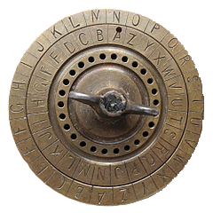
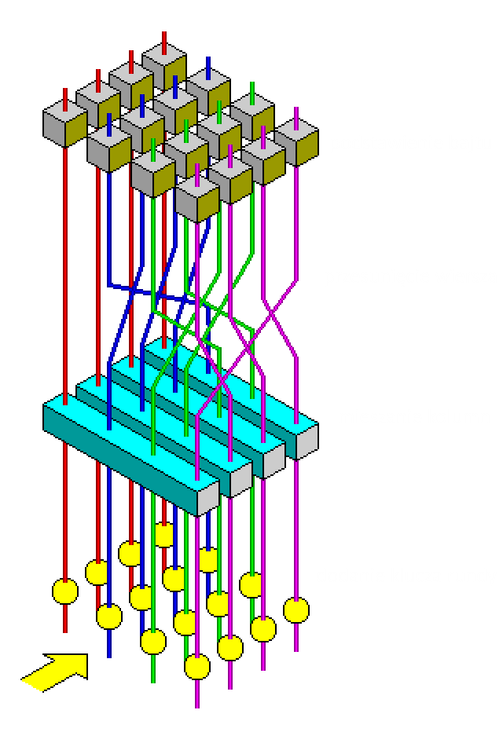

Szyfry przestawieniowe
Szyfry przestawieniowe to jedna z klasycznych metod szyfrowania. Charakteryzują się tym, że w zaszyfrowanym tekście występują wszystkie znaki z tekstu jawnego, ale w innej kolejności. Szyfry należące do tej grupy zmieniają kolejność liter w szyfrowanym tekście według określonego schematu.
Najprostszym przykładem szyfru przestawieniowego jest pisanie wspak. Inne przykłady to zamiana sąsiadujących liter czy przesunięcie spółgłosek o jedno miejsce. W obu przypadkach, kolejne pary znaków zamieniamy miejscami.
Szyfr płotkowy
Szyfr płotkowy to forma szyfru przestawieniowego, tekst jawny jest zapisywany w dół i po przekątnej na kolejnych rzędach wyimaginowanego płotu, a następnie porusza się w górę, gdy dotrzemy do dołu. Wiadomość jest następnie odczytywana w kolejnymi wierszami od góry.
Na przykład:
Tekst jawny: "KRYPTOGRAFIA"
Klucz: "3" (liczba wierszy)
| K | - | - | - | T | - | - | - | A | - | - | - |
| - | R | - | P | - | O | - | R | - | F | - | A |
| - | - | Y | - | - | - | G | - | - | - | I | - |
Szyfrogram: "KTARPORFAYGI"
Szyfr kolumnowy
W transpozycji kolumnowej, wiadomość jest zapisywana w rzędach o stałej długości,
a następnie odczytywana ponownie kolumna po kolumnie, a kolumny są wybierane w pewnym przetasowanym porządku.
Zarówno szerokość rzędów, jak i permutacja kolumn są zwykle definiowane przez słowo kluczowe.
Na przykład, słowo kluczowe ZEBRA ma długość 5 (więc rzędy mają długość 6), a permutacja jest definiowana przez
porządek alfabetyczny liter w słowie kluczowym. W tym przypadku, porządek byłby
“6 3 2 4 1”.
Na przykład:
Tekst jawny: "KRYPTOGRAFIA"
Klucz: "KOT" (3 kolumny, numerowanie kolumn 1 2 3)
| 1 | 2 | 3 |
| K | R | Y |
| P | T | O |
| G | R | A |
| F | I | A |
Szyfrogram: KPGFRTRIYOAA
Zaszyfruja dane!
Szyfry podstawieniowe
Szyfrowanie podstawieniowe to technika kryptograficzna, w której jednostki tekstu jawnego (niezaszyfrowanego) są zastępowane szyfrogramem (zaszyfrowanym tekstem) w określony sposób za pomocą klucza. “Jednostkami” mogą być pojedyncze litery, pary liter, trójki liter, mieszanki powyższych i tak dalej. Odbiorca odszyfrowuje tekst, wykonując odwrotny proces podstawienia, aby wydobyć oryginalną wiadomość. Współcześnie, ze względu na łatwość złamania, szyfry podstawieniowe nie są już używane do zapewnienia bezpieczeństwa komunikacji.

Szyfr Cezara
Jest to jedna z najprostszych technik szyfrowania, znana również jako szyfr przesuwający. Każda litera tekstu jawnego (niezaszyfrowanego) zastępowana jest inną, oddaloną od niej o stałą liczbę pozycji w alfabecie. Na przykład, jeżeli zdefiniujemy przesunięcie na “4”, litera “a” zostanie w takim szyfrze zastąpiona literą “c” (ponieważ “a” jest pierwszą literą alfabetu a “c” trzecią).

Zaszyfruj dane!
Psełdokod

Atbasz

Prosty monoalfabetyczny szyfr podstawieniowy
pochodzenia hebrajskiego, którego działanie polega
na zamianie litery leżącej w odległości X od początku
alfabetu na literę leżącą w odległości X od jego końca. Prawdopodobnie został on opracowany około roku 500 p.n.e.
Aby ułatwić sobie ręczne operacje na tym szyfrze wystarczy użyć tabeli.
| A | B | C | D | E | F | G | H | I | J | K | L | M |
| Z | Y | X | W | V | U | T | S | R | Q | P | O | N |
Na przykład:
Tekst jawny: "SZYFRY"
| A | B | C | D | E | F | G | H | I | J | K | L | M |
| Z | Y | X | W | V | U | T | S | R | Q | P | O | N |
Szyfrogram: "HABUIB"
Szyfr Playfair
Metoda szyfrowania Playfair, znana również jako szyfr Playfair, to poligramowy szyfr podstawieniowy, który zastępuje pary liter tekstu jawnego inną parą liter za pomocą specjalnej tabeli szyfrującej.
Etapy:
- Tworzenie tabeli szyfrującej: Najpierw tworzy się kwadratową tablicę 5x5, w której wpisuje się klucz (unikalne litery), a następnie uzupełnia pozostałe miejsca literami alfabetu, pomijając jedną literę (często ‘J’), aby zmieścić się w 25 polach.
- Przygotowanie tekstu jawnego: Tekst jawny dzieli się na pary liter, zwane digrafami. Jeśli para zawiera dwie takie same litery lub jest nieparzysta, dodaje się literę ‘X’ lub inną literę wypełniającą.
-
Szyfrowanie digrafów:
- Jeśli obie litery digrafu znajdują się w tej samej kolumnie, zastępuje się je literami bezpośrednio pod nimi w tabeli.
- Jeśli obie litery znajdują się w tym samym wierszu, zastępuje się je literami bezpośrednio po prawej stronie.
- Jeśli litery nie są ani w tym samym wierszu, ani w kolumnie, tworzy się prostokąt i zamienia się litery na te znajdujące się w przeciwnych rogach tego prostokąta (ale w tym samym wierszu).
Zaszyfruja dane!
Szyfr Vigenère’a
Szyfr Vigenère’a to klasyczny algorytm szyfrujący należący do grupy polialfabetycznych szyfrów podstawieniowych. Szyfr ten używa słowa kluczowego do szyfrowania tekstu jawnego, a każda litera klucza odpowiada przesunięciu w alfabecie, podobnie jak w szyfrze Cezara.
Tekst szyfrujemy na podstawie hasła. Szyfrowanie odbywa się w sposób następujący. Każdą literę tekstu jawnego szyfrujemy korzystając z alfabetu zaczynającego się od odpowiadającej litery w haśle. Szyfrowanie i deszyfrowanie odbywa się na podstawie tablicy Vigenere`a.
W przypadku, gdy hasło jest krótsze od szyfrowanego tekstu powtarzamy je wielokrotnie.
Przykład:
| Tekst jawny | K | R | Y | P | T | O | G | R | A | F | I | A |
|---|---|---|---|---|---|---|---|---|---|---|---|---|
| Klucz | S | Z | Y | F | R | S | Z | Y | F | R | S | Z |
| Szyfrogram | C | Q | W | U | K | G | F | P | F | W | A | Z | CQWUKGFPFWAZ
| A | B | C | D | E | F | G | H | I | J | K | L | M | N | O | P | Q | R | S | T | U | V | W | X | Y | Z | |
|---|---|---|---|---|---|---|---|---|---|---|---|---|---|---|---|---|---|---|---|---|---|---|---|---|---|---|
| A | A | B | C | D | E | F | G | H | I | J | K | L | M | N | O | P | Q | R | S | T | U | V | W | X | Y | Z |
| B | B | C | D | E | F | G | H | I | J | K | L | M | N | O | P | Q | R | S | T | U | V | W | X | Y | Z | A |
| C | C | D | E | F | G | H | I | J | K | L | M | N | O | P | Q | R | S | T | U | V | W | X | Y | Z | A | B |
| D | D | E | F | G | H | I | J | K | L | M | N | O | P | Q | R | S | T | U | V | W | X | Y | Z | A | B | C |
| E | E | F | G | H | I | J | K | L | M | N | O | P | Q | R | S | T | U | V | W | X | Y | Z | A | B | C | D |
| F | F | G | H | I | J | K | L | M | N | O | P | Q | R | S | T | U | V | W | X | Y | Z | A | B | C | D | E |
| G | G | H | I | J | K | L | M | N | O | P | Q | R | S | T | U | V | W | X | Y | Z | A | B | C | D | E | F |
| H | H | I | J | K | L | M | N | O | P | Q | R | S | T | U | V | W | X | Y | Z | A | B | C | D | E | F | G |
| I | I | J | K | L | M | N | O | P | Q | R | S | T | U | V | W | X | Y | Z | A | B | C | D | E | F | G | H |
| J | J | K | L | M | N | O | P | Q | R | S | T | U | V | W | X | Y | Z | A | B | C | D | E | F | G | H | I |
| K | K | L | M | N | O | P | Q | R | S | T | U | V | W | X | Y | Z | A | B | C | D | E | F | G | H | I | J |
| L | L | M | N | O | P | Q | R | S | T | U | V | W | X | Y | Z | A | B | C | D | E | F | G | H | I | J | K |
| M | M | N | O | P | Q | R | S | T | U | V | W | X | Y | Z | A | B | C | D | E | F | G | H | I | J | K | L |
| N | N | O | P | Q | R | S | T | U | V | W | X | Y | Z | A | B | C | D | E | F | G | H | I | J | K | L | M |
| O | O | P | Q | R | S | T | U | V | W | X | Y | Z | A | B | C | D | E | F | G | H | I | J | K | L | M | N |
| P | P | Q | R | S | T | U | V | W | X | Y | Z | A | B | C | D | E | F | G | H | I | J | K | L | M | N | O |
| Q | Q | R | S | T | U | V | W | X | Y | Z | A | B | C | D | E | F | G | H | I | J | K | L | M | N | O | P |
| R | R | S | T | U | V | W | X | Y | Z | A | B | C | D | E | F | G | H | I | J | K | L | M | N | O | P | Q |
| S | S | T | U | V | W | X | Y | Z | A | B | C | D | E | F | G | H | I | J | K | L | M | N | O | P | Q | R |
| T | T | U | V | W | X | Y | Z | A | B | C | D | E | F | G | H | I | J | K | L | M | N | O | P | Q | R | S |
| U | U | V | W | X | Y | Z | A | B | C | D | E | F | G | H | I | J | K | L | M | N | O | P | Q | R | S | T |
| V | V | W | X | Y | Z | A | B | C | D | E | F | G | H | I | J | K | L | M | N | O | P | Q | R | S | T | U |
| W | W | X | Y | Z | A | B | C | D | E | F | G | H | I | J | K | L | M | N | O | P | Q | R | S | T | U | V |
| X | X | Y | Z | A | B | C | D | E | F | G | H | I | J | K | L | M | N | O | P | Q | R | S | T | U | V | W |
| Y | Y | Z | A | B | C | D | E | F | G | H | I | J | K | L | M | N | O | P | Q | R | S | T | U | V | W | X |
| Z | Z | A | B | C | D | E | F | G | H | I | J | K | L | M | N | O | P | Q | R | S | T | U | V | W | X | Y |
Tablica Vigenere`a
Szyfry synchroniczne
Kryptografia symetryczna, znana również jako kryptografia z kluczem tajnym, wykorzystuje pojedynczy klucz zarówno do procesów szyfrowania, jak i deszyfrowania. Klucz ten nie jest powiązany z użytkownikiem (nadawcą lub odbiorcą wiadomości), a z wykonywaną operacją.
DES (Data Encryption Standard)
DES to symetryczny szyfr blokowy zaprojektowany w 1975 roku przez IBM na zlecenie ówczesnego Narodowego Biura Standardów USA. Od 1976 do 2001 roku stanowił standard federalny USA, a od roku 1981 standard ANSI dla sektora prywatnego. Szyfr DES operuje na 64-bitowych blokach danych, używając 56-bitowego klucza (z dodatkowymi 8 bitami parzystości, które nie są wykorzystywane w procesie szyfrowania). Algorytm ten jest znany z tego, że był jednym z pierwszych nowoczesnych i wydajnych szyfrów przeznaczonym do implementacji programowych i sprzętowych na szeroką skalę.
W algorytmie DES do szyfrowania i deszyfrowania danych wykorzystywanych jest 56 bitów klucza. Klucz jest zapisywany w postaci 64-bitowego ciągu, w którym co 8 bit jest bitem kontrolnym i może służyć do kontroli parzystości. W procesie szyfrowania dane wejściowe (tekst jawny) dzielone są na bloki 64-bitowe. Następnie dla każdego bloku wykonywane są następujące operacje:
- Permutacja początkowa bloku przestawiająca bity w pewien z góry określony sposób.
- Podzielenie bloku wejściowego danych na dwie 32-bitowe części: lewą oraz prawą.
- Wybranie 56 bitów z 64-bitowego sekretnego klucza (Permutacja PC-1), a następnie podzielenie tych bitów na dwie 28-bitowe części.
- Powtórzenie 16 razy tych samych operacji, nazywanych funkcjami Feistela, przy użyciu przekazanego klucza

Schemat Blokowy Algorytmu DES
AES (Advanced Encryption Standard)

Wizualizacja funkcji rundy AES
AES to symetryczny szyfr blokowy, który został przyjęty przez rząd Stanów Zjednoczonych jako standard szyfrowania w 2001 roku, zastępując starszy algorytm DES. AES jest oparty na algorytmie Rijndaela, którego autorami są belgijscy kryptografowie, Joan Daemen i Vincent Rijmen. AES operuje na 128-bitowych blokach danych i używa kluczy o długości 128, 192 lub 256 bitów. Liczba rund szyfrowania w AES zależy od długości klucza: 10 rund dla klucza 128-bitowego, 12 rund dla 192-bitowego i 14 rund dla 256-bitowego.
AES bazuje na zasadzie, zwanej siecią substytucji-permutacji. Wykazuje się dużą szybkością pracy zarówno w przypadku sprzętu komputerowego, jak i oprogramowania. W przeciwieństwie do swego poprzednika, algorytmu DES, AES nie używa Sieci Feistela. AES posiada określony rozmiar bloku – 128 bitów, natomiast rozmiar klucza wynosi 128, 192, lub 256 bitów. Funkcja substytucyjna ma bardzo oryginalną konstrukcję, która uodparnia ten algorytm na znane ataki